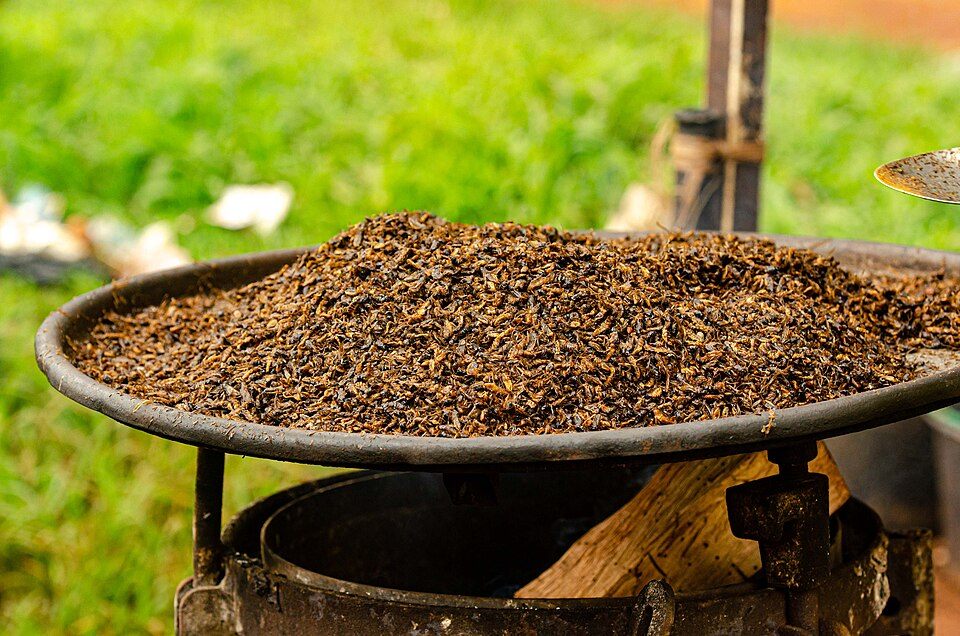
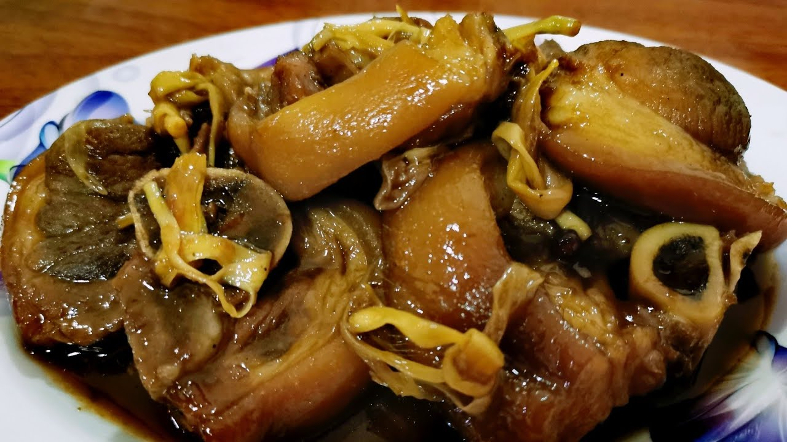
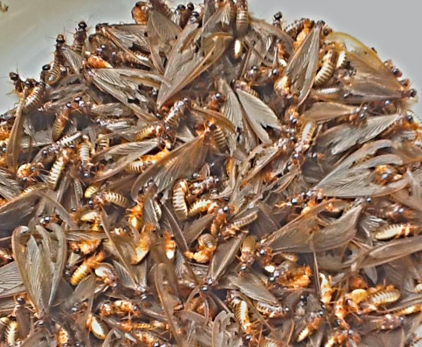
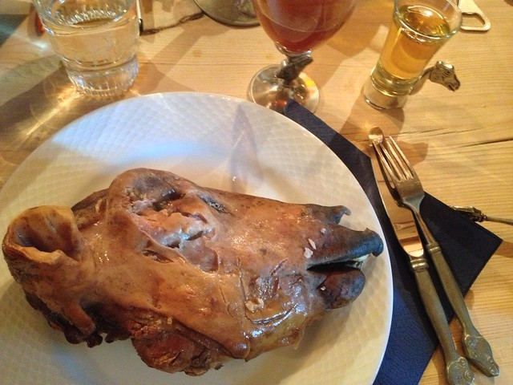
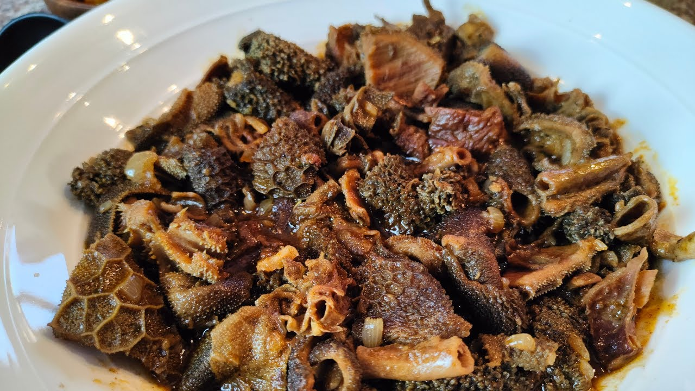
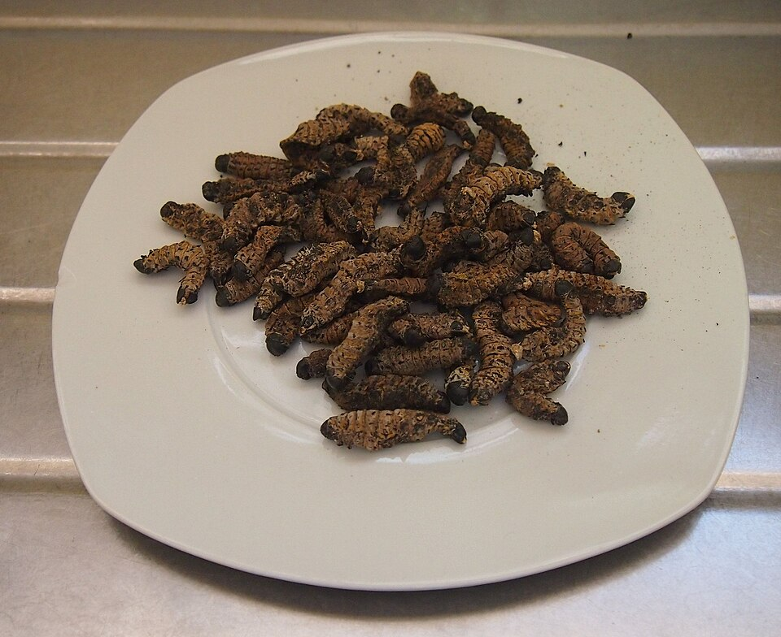
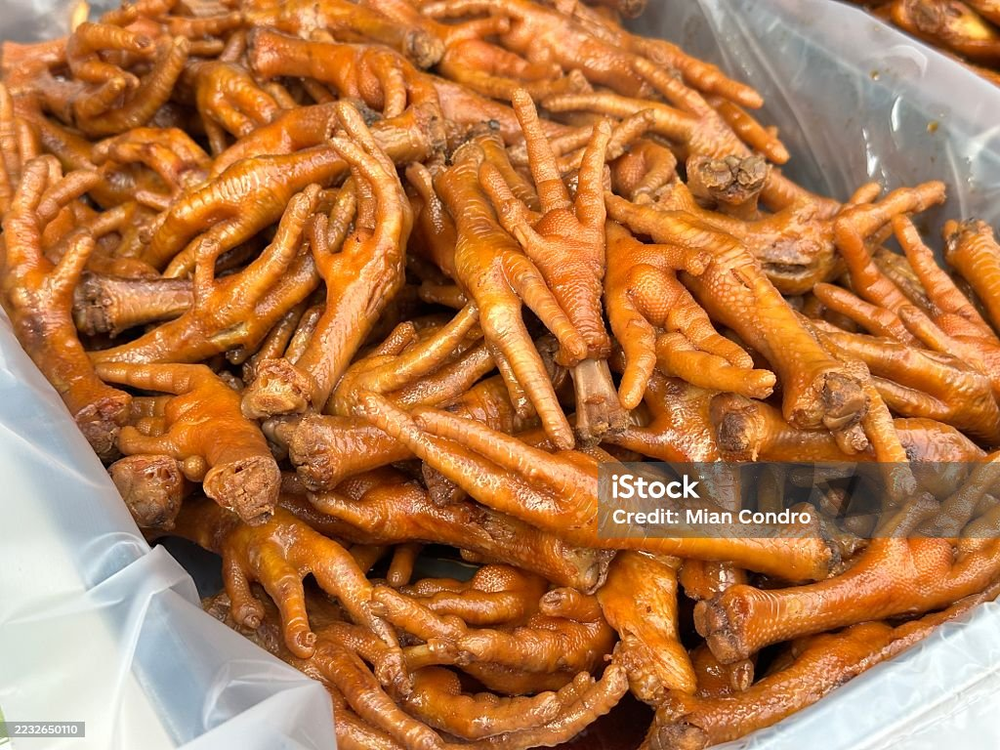
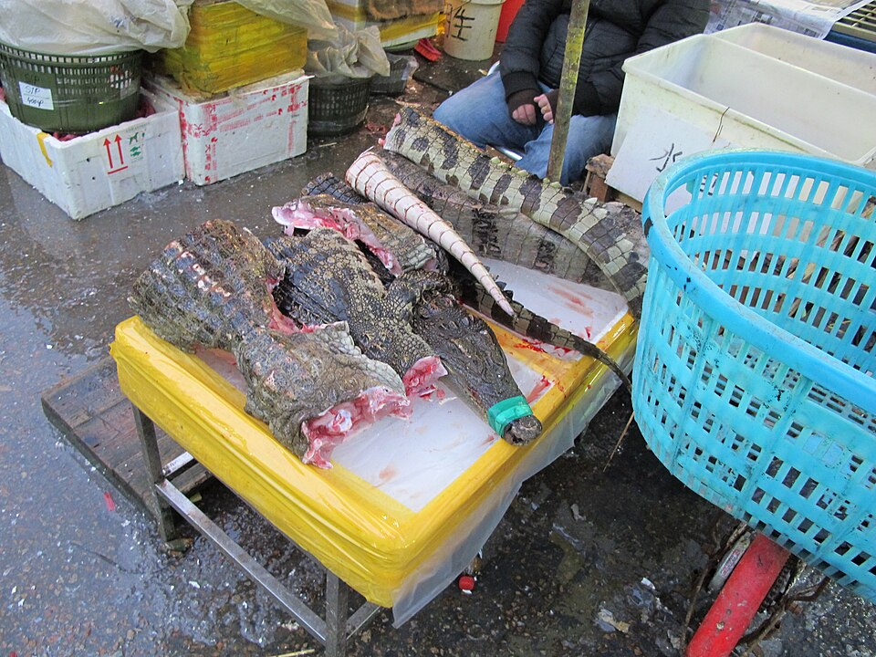
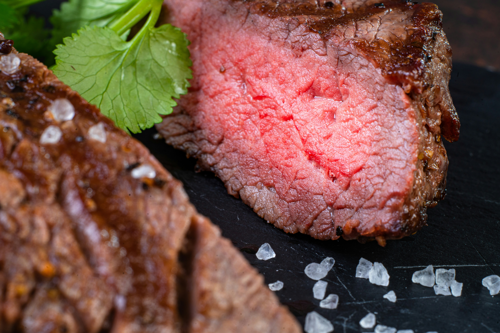

food name
This meal....
This meal....
Click the button to save your favourite foods. (JavaScript will be added later.)









| Food | Protein | Fat | Cooking Method |
|---|---|---|---|
| Mopane Worms | High | Low | Fried / Boiled |
| Chicken Feet | Medium | Medium | Grilled / Boiled |
| sheepshead | High | Medium | Boiled |
| Crocodile Meat | High | Low | Grilled |
| Ostrich Meat | High | Very Low | Grilled |
| Cowsheel | High | Very high | Cooked |
| flyingants | low | very low | Fried |
| Tripe | High | Very High | Cooked |
| Termites | Low | Very Low | Fried |

Mopane worms are dried up caterpillars found mainly in South Africa, prodominantley in Limpopo they are harvested from Mopane trees and are usually dried, fried or cooked as a gravy. They are high in protein and are popular traditional food.

Chicken Feet, commonly known as Walkie Talkies in South Africa, are a popular street food. They are cleaned, seasoned and either braaied, boiled or grilled. Many people enjoy them because they represent South African street food culture.

Crocodile Meat is a lean white meat that is served in some resturants and game reserves. it has a mild flavour and many people compare its taste to a mixture of chicken and fish. It is high in protein but low in fat.

Ostrich meat is a healthy alternative to beef because it contains less fat while still being rich in protein and iron. It is commonly prepared as steaks, burgers amd sausages and is enjoyed by many people in South Africa
Termites are eaten in many african countries including South Africa, Zimbabwe, Botswana, and Zambia. They are usually collected during the rainy season and are roasted, fried or dried before being eaten. They are highly nutritious and are an important source of protein in many rural communities
Flying Ants are a seasonal delicacy in several African countries. They are collected after summer rainfall, and the wings are removed before they are roasted or fried. Many people enjoy them as a crunchy
Cow heel, also known as trotters, is made from the feet of a cow. It is slow-cooked until tender and is commonly served with pap, rice, or dumplings. Popular in many South African Households and is known for its rich flavour and has a squishy texture
Its made from Stomach lining of Cows or sheeps. It is thoroughly cleaned ans slow-cooked with vegetables and spices. It is a traditional dish that is enjoyed across many Southern African cultures
This website was created as part of the WPR261 Web Programming project. Our aim is to introduce users to unusual foods that are enjoyed in different cultures, especially in South Africa. Visitors can learn about each food, compare nutritional information and discover interesting facts.
The theme of our project is Unusual Foods. We selected this theme because food reflects culture and tradition, and many people are interested in discovering unique dishes from South Africa.